<ListView Name="Messages" ItemsSource="{Binding messageList}">
<ListView.ItemTemplate>
<DataTemplate>
<TextBlock Text="{Binding}"/>
</DataTemplate>
</ListView.ItemTemplate>
</ListView>WPN Push Notifications with AeroGear's UnifiedPush Server
The following step-by-step guides, give you an introduction on how to use the AeroGear UnifiedPush Server for sending Push Notifications to your own Windows Apps. You will need a Windows dev account to use Window’s services, and can use either a real Windows device or the emulator to test. So, let’s get started:
Windows setup
Before the Windows application is able to receive the notifications, you must authenticate yourself with Microsoft as a developer. You’ll need to create or have a Microsoft account.
Register your app
Then you’ll need to register your app. Open the Windows Store apps page of the Windows Dev Center and sign in with your Microsoft account.
-
Click submit apps:
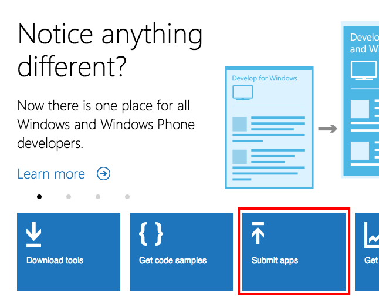
-
Choose 'Windows Phone Store' for now:
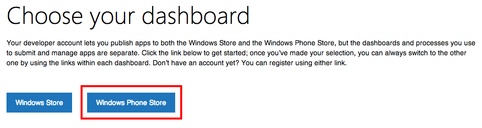
-
On the dasboard page click the 'Submit App' button:
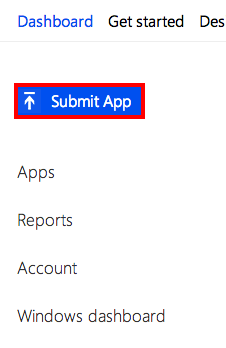
-
Go to the 'App Info' page to fill out nessary information:

Provide a unique name for your app. Enter the name and click the Reserve name button. If the name is available, it is reserved for your app. Once you have successfully reserved a name for your app, the credentials will be displayed, you’ll need to save these for later:
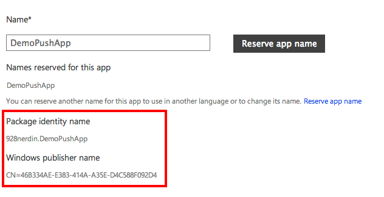
-
Select a category and click 'More options' and then click the 'here' link:
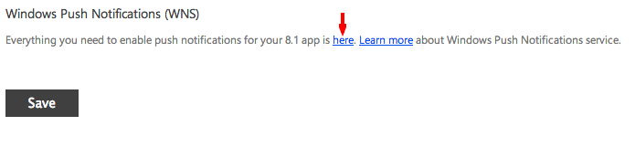
-
Note down the Package SID and the Client Secret as we’ll need those later on:
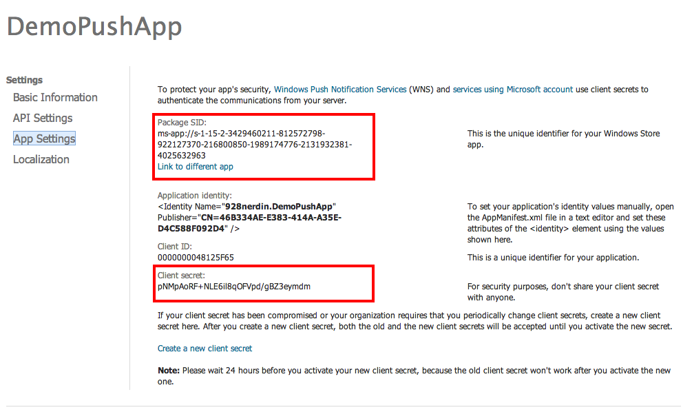
The AeroGear UnifiedPush Server
With all the Windows Setup work being done, we are now ready to setup the UnifiedPush Server, so that it can be used to connect to WNS for a later message sending.
In the Wizard after you create a PushApplication, click the Add Variant button and fill out the Windows options. You will want to use the Package SID and Client Secret from the Windows Dev Center in their appropriate fields:
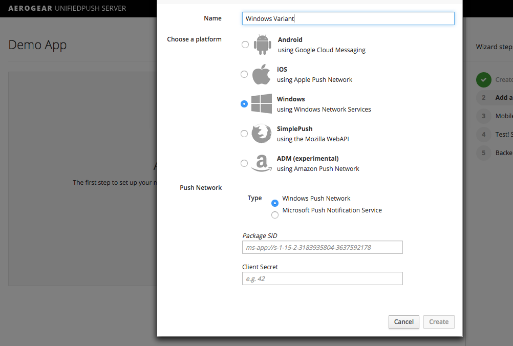
Afterwards you will see some code snippets, containing the Variant ID and Secret, that you can use in your Windows application for the registration of the device, running your app:
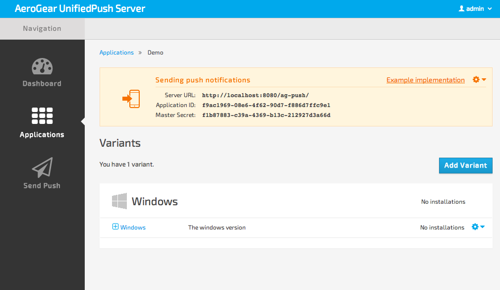
Visual Studio
The server is now configured. Let’s move to Visual Studio and create an Windows application that will use the AeroGear Windows library to connect to the UnifiedPush server and start receiving notifications.
Your first Windows/Push App
Now that the UnifiedPush server is up and running, time to create a sample application that will exercice AeroGear’s Windows Push library support.
Let’s get started!
Creating the application
Fire up Visual Studio and choose 'File'→ 'New' → 'Project', then choose 'Blank App (Windows Phone)' on the project template dialog. Fill the 'Name' field with the name 'PushApplication'.
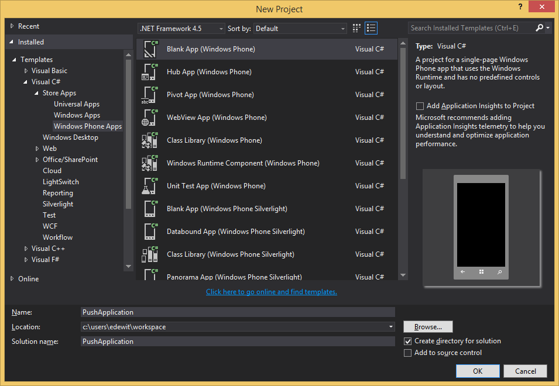
Now Visual Studio has generated a sample Windows Phone project with a default 'App' class.

Now it’s time to add the aerogear nuget package, right click on project in the 'Solution Explorer' and select 'Manage NuGet Packages' select online and nuget.org and search for aerogear and install to add the dependency.

Open MainPage.xaml from the Solution Explorer and add a ListView to the Grid
Open the MainPage.xaml.cs and add a field to bind the list view to:
public ObservableCollection<string> messageList { get; private set; }
public MainPage()
{
messageList = new ObservableCollection<string>();
DataContext = this;Now that we have the project set up, time to configure it to receive Push notifications. We will start first with the registration of the application with the UnifiedPush server.
Registration with the UnifiedPush server
For now let’s keep it simple and add the Registration logic to the MainPage before the components have initialized:
using AeroGear.Push;
using System;
using System.Collections.Generic;
using System.Collections.ObjectModel;
using System.IO;
using System.Linq;
using System.Runtime.InteropServices.WindowsRuntime;
using Windows.Foundation;
using Windows.Foundation.Collections;
using Windows.UI.Xaml;
using Windows.UI.Xaml.Controls;
using Windows.UI.Xaml.Controls.Primitives;
using Windows.UI.Xaml.Data;
using Windows.UI.Xaml.Input;
using Windows.UI.Xaml.Media;
using Windows.UI.Xaml.Navigation;
// The Blank Page item template is documented at http://go.microsoft.com/fwlink/?LinkId=391641
namespace PushApplication
{
/// <summary>
/// An empty page that can be used on its own or navigated to within a Frame.
/// </summary>
public sealed partial class MainPage : Page
{
public ObservableCollection<string> messageList { get; private set; }
public MainPage()
{
messageList = new ObservableCollection<string>();
DataContext = this;
PushConfig pushConfig = new PushConfig() { UnifiedPushUri = new Uri("<the URL of the running UnifiedPush server>"), VariantId = "<Your-Variant-ID>", VariantSecret = "<Your-Variant-Secret>" };
Registration registration = new WnsRegistration();
registration.Register(pushConfig);
this.InitializeComponent();
this.NavigationCacheMode = NavigationCacheMode.Required;
}
/// <summary>
/// Invoked when this page is about to be displayed in a Frame.
/// </summary>
/// <param name="e">Event data that describes how this page was reached.
/// This parameter is typically used to configure the page.</param>
protected override void OnNavigatedTo(NavigationEventArgs e)
{
// TODO: Prepare page for display here.
// TODO: If your application contains multiple pages, ensure that you are
// handling the hardware Back button by registering for the
// Windows.Phone.UI.Input.HardwareButtons.BackPressed event.
// If you are using the NavigationHelper provided by some templates,
// this event is handled for you.
}
}
}At the top of the file we declare the configurations params we obtained at the previous steps. The VARIANT_ID and SECRET are the id’s you got after registering your Windows variant to the UnifiedPush server. Fill them with the values representing your specific configuration.
| Ensure that you put valid values on those params, otherwise you would be unable to register and receive notifications from the UnifiedPush server. Invalid configuration params are a very common source of problems, so please revisit them if you are experiencing problems. |
That is all what is needed to register with the UnifiedPush server!
| Notice that we didn’t have to write any code to register the device with WNS. The library takes care off all the plumbing to register the device with WNS, obtain the 'channelUrl' and submit it to the UnifiedPush server. |
Receiving notifications
We are going to register a event handler that will display the received notification in the ListView. First we need to edit the app’s settings.
Edit App’s settings
Open the Package.appxmanifest and set Toast capable to Yes
Open the Package.appxmanifest in source mode (press F7) find the <Identity>' entry add the necessary app identity values you got from the Windows Dev Center in the previous step:
...
<Identity Name="928pubname.PushApplication" Publisher="CN=46C334AA-C383-434A-A35E-D2C588F092D3" Version="1.0.0.0" />
...Handling notification
Create a new method, name it 'HandleNotification' and paste the following code:
void HandleNotification(object sender, PushReceivedEvent e)
{
Dispatcher.RunAsync(CoreDispatcherPriority.Normal, () => messageList.Add(e.Args.ToastNotification.Content.InnerText));
}Now add this method to the PushReceivedEvent on the register object the full code now looks like this:
using AeroGear.Push;
using System;
using System.Collections.Generic;
using System.Collections.ObjectModel;
using System.IO;
using System.Linq;
using System.Runtime.InteropServices.WindowsRuntime;
using Windows.Foundation;
using Windows.Foundation.Collections;
using Windows.UI.Core;
using Windows.UI.Xaml;
using Windows.UI.Xaml.Controls;
using Windows.UI.Xaml.Controls.Primitives;
using Windows.UI.Xaml.Data;
using Windows.UI.Xaml.Input;
using Windows.UI.Xaml.Media;
using Windows.UI.Xaml.Navigation;
// The Blank Page item template is documented at http://go.microsoft.com/fwlink/?LinkId=391641
namespace PushApplication
{
/// <summary>
/// An empty page that can be used on its own or navigated to within a Frame.
/// </summary>
public sealed partial class MainPage : Page
{
public ObservableCollection<string> messageList { get; private set; }
public MainPage()
{
messageList = new ObservableCollection<string>();
DataContext = this;
PushConfig pushConfig = new PushConfig() { UnifiedPushUri = new Uri("<the URL of the running UnifiedPush server>"), VariantId = "<Your-Variant-ID>", VariantSecret = "<Your-Variant-Secret>" };
Registration registration = new WnsRegistration();
registration.PushReceivedEvent += HandleNotification;
registration.Register(pushConfig);
this.InitializeComponent();
this.NavigationCacheMode = NavigationCacheMode.Required;
}
void HandleNotification(object sender, PushReceivedEvent e) //[3]
{
Dispatcher.RunAsync(CoreDispatcherPriority.Normal, () => messageList.Add(e.Args.message));
}
/// <summary>
/// Invoked when this page is about to be displayed in a Frame.
/// </summary>
/// <param name="e">Event data that describes how this page was reached.
/// This parameter is typically used to configure the page.</param>
protected override void OnNavigatedTo(NavigationEventArgs e)
{
// TODO: Prepare page for display here.
// TODO: If your application contains multiple pages, ensure that you are
// handling the hardware Back button by registering for the
// Windows.Phone.UI.Input.HardwareButtons.BackPressed event.
// If you are using the NavigationHelper provided by some templates,
// this event is handled for you.
}
}
}In the 'HandleNotification' callback method [3] we simple extract the message payload and add it to the messageList.
We are now ready to run the application.
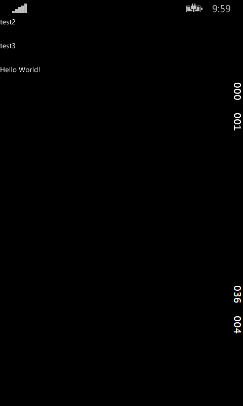
Metrics
Optionally the windows client SDK supports sending metrics to UPS. Metrics can be used to view how many users have used the message to open the app. This can be important information if you want to know how well your messages are received by your application users.
UPS sends an unique ID for every push message by default all we have to do is send this ID back to UPS when the app was opened using the message. Open the App.xaml.cs and find the OnLaunched method. At the end of the method add the following:
if (!string.IsNullOrEmpty(e.Arguments))
{
var data = UrlQueryParser.ParseQueryString(e.Arguments); // [1]
rootFrame.Navigate(typeof(MainPage), data[Registration.PUSH_ID_KEY]); // [2]
}The e.Arguments are filled when the user 'opens' the app using the message in [1] we create a IDictionary out off the passed arguments and then navigate to the MainPage with the push message ID, then on the MainPage where we do the registration we can also send the metrics, all we have to do is change the logic slightly:
var param = e.Parameter as string; // [1]
if (string.IsNullOrEmpty(param))
{
await registration.Register(pushConfig);
onRegistrationComplete();
}
else
{
await registration.SendMetricWhenAppLaunched(pushConfig, param);
}When the push message ID [1] is not there we perform a normal registration otherwise we send the metrics to UPS
Now that we have our application up an running time to send messages using the AeroGear UnifiedPush Server!
Send a Push Notification
Now that we have the sample application running, it is time to use the AeroGear UnifiedPush Server for delivering a Push Notification message.
Simple Sender
Login to the administration console of the UnifiedPush server and click on the "Send Notification" button on the desired PushApplication and write a message in the text field. Once done, hit the 'Send Push Notification'.
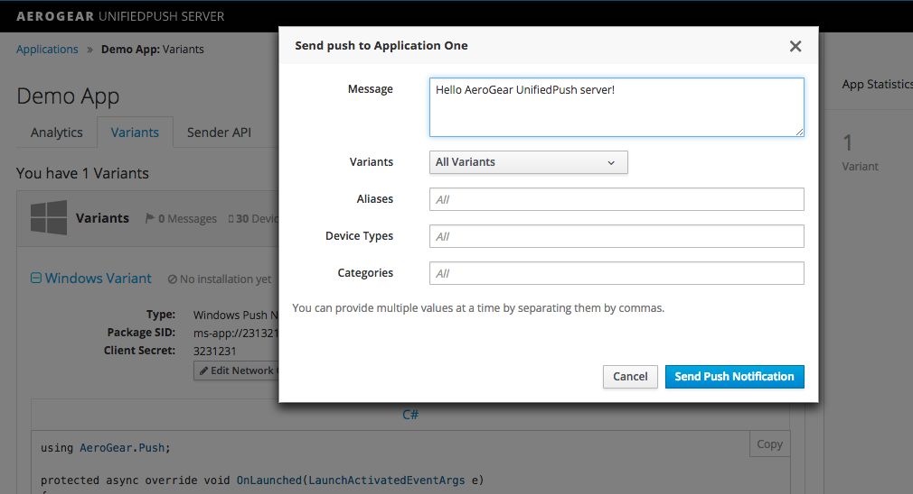
If all goes well, you should see the message payload being displayed on screen:
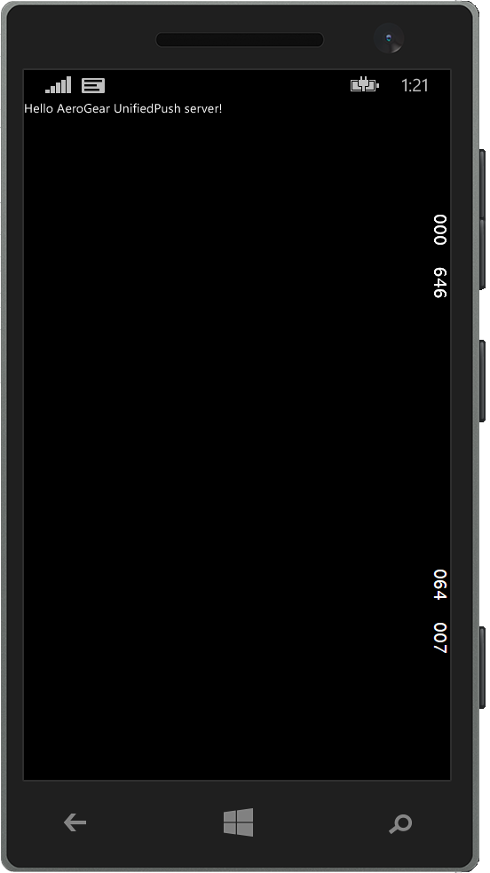
Now click the 'Home' button to return to Home Screen and send another push message. You should see the notification being displayed in the Notification Manager:
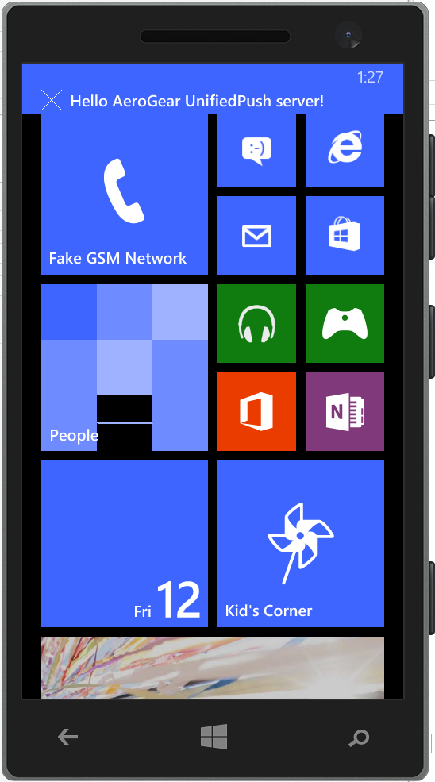
If you want to go to a specific page when the application is brought back into the foreground you can add a page parameter into the message:
"message": {
"windows": {
"page": "/YourPage.xaml"
...
}
}You are done
That’s all you need to use the AeroGear project for sending and receiving Push Notifications for Windows.